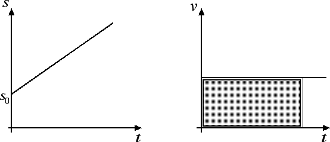

Cinematica
Moto rettilineo uniforme
Dopo aver introdotto i concetti fondamentali che servono a studiare la cinematica, ossia traiettoria e legge oraria, velocità e accelerazione, andremo ora a studiare alcuni esempi particolari di moto. Il primo esempio di moto che consideriamo è il moto rettilineo uniforme, ossia un moto che avviene su una traiettoria rettilinea con velocità costante.
Nel moto rettilineo uniforme il sistema di riferimento è costituito da un solo asse cartesiano, che coincide con la traiettoria descritta dal corpo, e sul quale dobbiamo fissare un'origine, un'unità di misura per valutare le distanze e un verso positivo. Completate queste operazioni, ad ogni istante di tempo t il corpo occuperà un determinato punto lungo la traiettoria che verrà univocamente determinato dal valore dell'ascissa s sull'asse di riferimento. Dal momento che la velocità di un corpo v è definita come v = Δs / Δt, se v è costante anche il rapporto Δs / Δt è costante. Questo vuol dire che lo spazio percorso Δs e l'intervallo di tempo impiegato a percorrerlo Δt sono direttamente proporzionali.
Dalla definizione stessa di velocità possiamo ricavarci la legge oraria del moto rettilineo uniforme. Per prima cosa, invertendo la definizione di velocità, otteniamo: Δs = v · Δt, con v costante. Tale relazione può essere riscritta come s = s0 + v · (t - t0), dove s0 è la posizione occupata dal corpo all'istante iniziale t0, mentre s è la posizione occupata dal corpo all'istante di tempo generico t. Come caso particolare, consideriamo il caso in cui l'istante iniziale t0 coincide con il momento in cui facciamo partire il cronometro. Allora possiamo porre t0 = 0 e otteniamo: s - s0 = v · t. Sommando s0 ad entrambi i membri otteniamo finalmente la legge oraria del moto rettilineo uniforme: s = s0 + v · t. Tale relazione ci dice che, per conoscere la posizione del corpo s ad ogni istante di tempo t, dobbiamo conoscere la posizione iniziale del corpo s0 e la sua velocità v. Ad esempio se all'istante iniziale il corpo si trova a s0 = 20 m dall'origine del sistema di riferimento e mantiene una velocità costante di v = 10 m / s, avremo che dopo un tempo t = 30 s il corpo si troverà a s = 20 m + 10 m / s · 30 s = 320 m dall'origine del sistema di riferimento.
Di seguito riportiamo il grafico spazio-tempo e il grafico velocità-tempo per il moto rettilineo uniforme:
Per quanto riguardo il grafico spazio-tempo osserviamo come la pendenza della retta fornisca un'informazione relativa alla velocità del corpo in movimento: maggiore è la pendenza della retta, maggiore è la velocità del corpo.
Molto interessante è anche l'interpretazione geometrica del grafico velocità-tempo: l'area del rettangolo in figura infatti è uguale allo spazio percorso dal corpo in un intervallo di tempo uguale alla lunghezza della base del rettangolo. Ad esempio, se un corpo si muove a una velocità costante di v = 2 m / s, in un intervallo di tempo pari a 20 s percorrerà uno spazio pari a s = 2 m / s · 20 s = 40 m numericamente uguale all'area del rettangolo che ha per base l'intervallo di tempo e per altezza la velocità costante. Questa proprietà del grafico velocità-tempo rimane valida anche per moti diversi dal moto rettilineo uniforme: invece di ottenere una linea parallela all'asse delle ascisse avremo una curva generica ma l'area sottesa al grafico rimarrà numericamente uguale allo spazio percorso dal corpo.